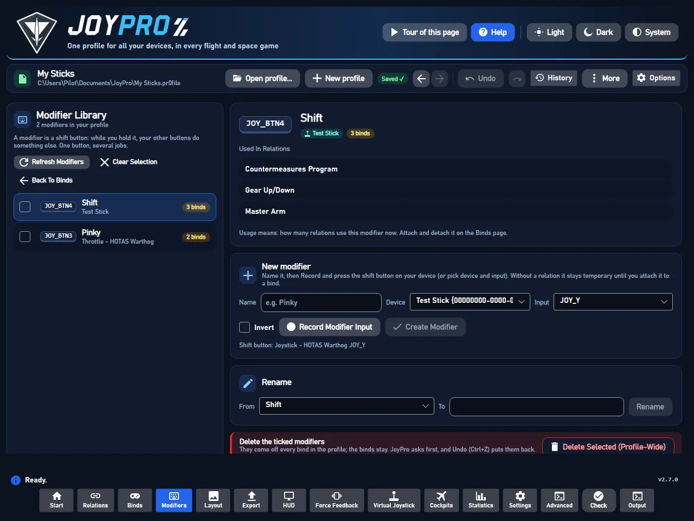

#Päivitä muuntimet
PainikekirjoitettuLukee profiilin muuntimet uudelleen ja rakentaa kortit uudelleen käyttömäärineen.
Ei muuta mitään.
Muunnin on vaihtopainike: kun pidät sitä pohjassa, muut painikkeesi tekevät jotain muuta. Yksi painike, monta tehtävää. Muuntimet-sivu luettelee profiilisi vaihtopainikkeet, näyttää, missä kutakin käytetään, ja luo, nimeää uudelleen ja poistaa niitä. Muunnin lisätään näppäinmääritykseen Määritykset-sivulla; vienti kirjoittaa sen jokaiseen peliin, joka tuntee muuntimet.


Useimmissa ohjainsauvoissa on vähemmän painikkeita kuin nykyaikaisessa ilma-aluksessa toimintoja. Muunnin kaksinkertaistaa ne: valitse yksi painike vaihtopainikkeeksi (usein pikkusormen vipu), niin jokainen muu painike saa toisen tehtävän, kun pidät sitä pohjassa.
Seuraavan viennin jälkeen näppäinmääritys vaatii, että vaihtopainike on pohjassa: DCS:ssä muunnin näkyy ilma-aluksen muunninluettelossa ja ohjaussolussa muodossa ”Pinky + JOY_BTN1”. Pelit, joissa ei ole muuntimia (katso pelien sivut), saavat näppäinmäärityksen ilman sitä, ja Tarkistus nimeää tällaiset näppäinmääritykset.
drafts.json), kunnes liität sen Määritykset-sivulla; se palaa, kun avaat profiilin uudelleen.Muuntimen luominen
flowchart TD N["Uusi muunnin:<br/>nimi + Tallenna syöte"] --> C["Luo muunnin"] C --> A["Valitsemaasi<br/>määritykseen"] C -.-> T["Väliaikainen muunnin:<br/>liitä se Määritykset-sivulla"] T -.-> A
Viennissä
flowchart TD P["Määritys, jossa on<br/>muunnin 'Pinky'"] --> E["Vie"] E --> D["DCS: ilma-aluksen<br/>muunninluettelo,<br/>'Pinky + JOY_BTN1'"] E --> O["Muut pelit: oma<br/>yhdistelmämuotonsa tai ei mitään"]


Näkymämalli: MainWindowViewModel.cs (RefreshModifiersAsync, CreateModifierOnSelectedBindAsync, RenameModifierAsync, DeleteSelectedModifiersEverywhereAsync, RecordModifierInputAsync), väliaikaiset muuntimet kohteessa pendingModifiersByName, jotka automaattitallennus säilyttää (profile-history). Muunnin kirjoitetaan määritykseen reformer-merkkijonona (nimi, laite, tulo, käännetty).
Moottori: engine binds modifier list täyttää kirjaston, engine binds modifier add lisää muuntimen suhteen määritykseen, engine binds modifier rename ja engine binds modifier remove muuttavat ja poistavat sen; sivu lukee sen jälkeen uudelleen komennon engine binds list. Tallennus käyttää samaa kaappauspalvelua kuin Määritykset-sivu (DirectInput ja näppäimistö, tallennuksen aikakatkaisu ja lämmittely kohdasta Asetukset > Määritykset).
Pelikohtaisesti: DCS kirjoittaa muuntimet tiedostoon <aircraft>\modifiers.lua ja kunkin määrityksen kohtaan reformers; IL-2 ja rekisteriä käyttävät pelit käyttävät omaa yhdistelmäsyntaksiaan, jos sellainen on, ja uudelleentuonti palauttaa nimet (Tuonti).
Tämän sivun taustalla oleva ominaisuusdokumentaatio, luotu repositoriosta:
9 ohjausobjektia, luettu ohjelman lähdekoodista: 9 kirjoitettu, 0 lähdekoodin tiedoilla (työkaluvihje, koodikommentti, moottorikutsu), 0 vielä laajennettavana.
Lukee profiilin muuntimet uudelleen ja rakentaa kortit uudelleen käyttömäärineen.
Ei muuta mitään.
Poistaa jokaisen muunninkortin valinnan. Vain valinnat muuttuvat.
Takaisin Määritykset-sivulle, jossa liität ja irrotat muuntimia suhteen näppäinmäärityksessä.
Valitsee muuntimen poistettavaksi valittujen poistolla ja liitettäväksi Määritykset-sivulla.
Työkaluvihje Aktiivinen, kun painiketta EI pidetä painettuna
Uusi muunnin on aktiivinen, kun sen painiketta ei pidetä pohjassa.
Hyödyllinen kaksiasentoiselle kytkimelle: toinen asento on tavallinen kerros, toinen vaihdettu kerros.
Odottaa seuraavaa painallusta ja täyttää sillä kentät Laite ja Tulo.
Paina sitä ja paina sitten vaihtopainiketta.
Tekee muuntimen nimestä, laitteesta, tulosta ja Käännä-valinnasta.
Kun suhde on valittu, se menee suoraan siihen näppäinmääritykseen; muuten se on väliaikainen muunnin, joka säilytetään profiilin kanssa, kunnes liität sen.
Antaa Lähde-kohdan muuntimelle Nimeksi-kohdan nimen jokaisessa sitä käyttävässä näppäinmäärityksessä.
Pelissä: uusi nimi näkyy seuraavan viennin jälkeen.
Poistaa jokaisen valitun muuntimen profiilin jokaisesta näppäinmäärityksestä; näppäinmääritykset säilyvät ilman vaihtopainiketta.
Kysyy ensin; Ctrl+Z tuo ne takaisin.